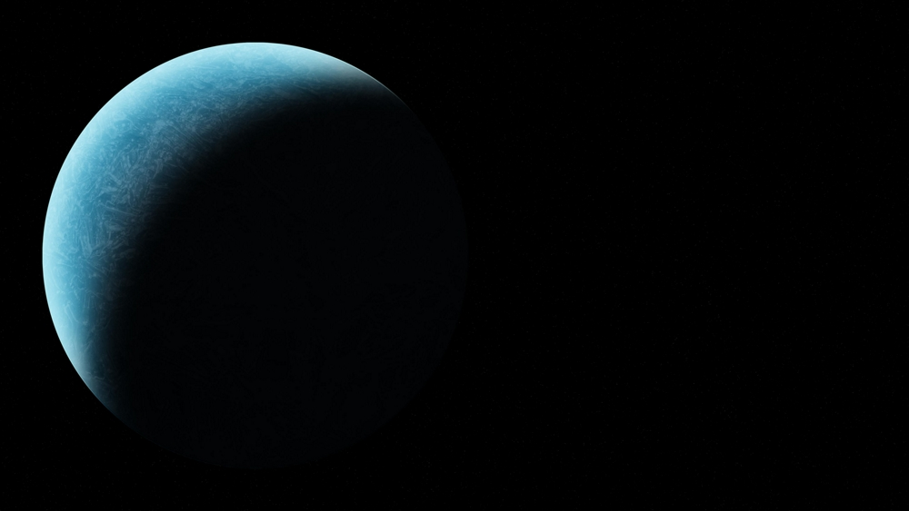

Uranus
Uranus (berasal dari nama Latin Ūranus untuk nama dewa Yunani Οὐρανός) adalah planet ketujuh dari Matahari. Uranus merupakan planet yang memiliki jari-jari terbesar ketiga sekaligus massa terbesar keempat di Tata Surya. Uranus juga merupakan satu-satunya planet yang namanya berasal dari tokoh dalam mitologi Yunani, dari versi Latinisasi nama dewa langit Yunani Ouranos. Komposisi Uranus serupa dengan Neptunus, dan keduanya mempunyai komposisi kimiawi yang berbeda dari raksasa gas yang lebih besar, Jupiter dan Saturnus. Karenanya, para astronom sering menempatkan Uranus dan Neptunus dalam kategori "raksasa es" untuk membedakan keduanya dari raksasa gas. Atmosfer Uranus serupa dengan Jupiter dan Saturnus karena kandungan utamanya adalah hidrogen dan helium, tetapi mengandung lebih banyak unsur "es" seperti air, amonia dan metana, bersama dengan sisa hidrokarbon. Atmosfer Uranus merupakan atmosfer planet terdingin di Tata Surya, dengan suhu terendah mencapai 49 K (−224 °C; −371 °F). Atmosfer Uranus mempunyai struktur awan berlapis-lapis dan kompleks, serta diperkirakan lapisan awan terendahnya terdiri atas air dan lapisan awan tertingginya terdiri atas metana. Bagian dalam Uranus sebagian besar terdiri atas es dan bebatuan. Seperti planet raksasa lain, Uranus memiliki sistem cincin, magnetosfer, serta banyak satelit alami. Sistem Uranus mempunyai konfigurasi yang unik di antara planet-planet karena kemiringan sumbunya miring ke samping, hampir pada bidang revolusinya mengelilingi Matahari. Oleh karena itu, kutub utara dan selatannya terletak pada tempat yang merupakan khatulistiwa bagi planet lain. Pada tahun 1986, citra yang diabadikan oleh wahana antariksa Voyager 2 menunjukkan Uranus sebagai planet yang terlihat tidak memiliki ketampakan pada cahaya tampak, yaitu tanpa pita awan atau badai yang biasanya dimiliki oleh planet raksasa. Meskipun demikian, pengamat di Bumi melihat tanda-tanda perubahan musim dan aktivitas cuaca yang meningkat ketika Uranus mencapai ekuinoksnya pada tahun 2007. Kecepatan angin di permukaan Uranus dapat mencapai 250 meter per detik (900 km/h; 560 mph). (wikipedia.com)